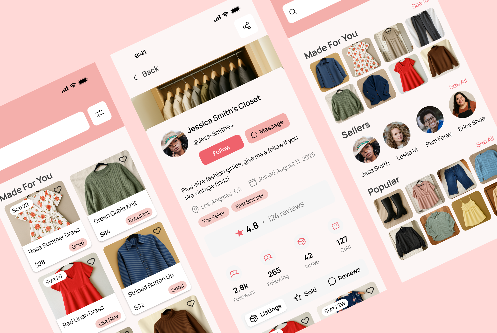

Plus Closet
An inclusive resale platform built by and for plus-size women, designed to make shopping effortless and joyful. See it live ↗
Overview
OVERVIEWThe fast fashion and resale industry continues to fail plus-size shoppers. Brands claim inclusivity, but real experience tells a different story: plus-size options are buried, unflattering, or an afterthought across both physical stores and digital platforms.
Through Springboard's Industry Design Project, I was paired with the founder of Plus Closet, an early-stage startup building a resale platform by and for plus-size women. Our shared mission was to design a functional prototype for an inclusive resale experience that centers plus-size women, empowers sellers, and makes shopping joyful and easy.
As team lead, I guided two UX designers through a five-week sprint — running weekly client meetings, facilitating design reviews, and delegating based on each teammate's strengths. As a designer, my own focus was the buyer-side flow, from wireframes to final prototype.
What I found
WHAT I FOUNDSearch fatigue
"I have to dig for my size... and still end up compromising."
Emotional labor
Users feel discouraged, invisible, or even blamed by existing platforms.
Exclusion by design
Depop and ThredUp prioritize aesthetics over accessibility — no filters for fit, body type, or size-forward browsing.
"Most plus-size clothing is the only option, not a good one."
— interview participantWe benchmarked Depop, Poshmark, Etsy, and ThredUp — extracting best practices on boutique seller branding and mobile-first interaction, while identifying where each fell short for plus-size buyers specifically.
The problem, reframed
THE PROBLEM, REFRAMEDPlus-size fashion buyers and sellers need a dedicated platform that supports size-inclusive resale and personalized closet branding because mainstream resale apps marginalize their needs through poor discoverability, limited tools, and a lack of social recognition.
Client interviews revealed our target persona: a stylish curator and fashion-savvy seller managing a semi-professional closet with community influence.
The leadership challenge
THE LEADERSHIP CHALLENGELeading this team meant translating founder instincts and shifting priorities into one shared design vocabulary. I ran weekly client meetings, created agendas, and presented progress to keep stakeholders aligned. Internally, I facilitated design reviews to keep the team focused and collaborative, delegated tasks based on each designer's strengths, and kept momentum through scope changes that came up mid-sprint.
A significant part of the design process was translating complex, sometimes conflicting feedback into actionable next steps without losing the inclusive sizing mission that brought us to the project.
Key design decisions
KEY DESIGN DECISIONSVisual-first dashboard
Usability testing revealed a strong preference for image-only product cards. This reduced decision fatigue by keeping the layout visual and simple, surfaced more products per screen, and aligned with how users actually browse which testing revealed to be by aesthetic and style, rather than just filters.
Resolving the NWT/NWOT conflict
In initial testing, every participant but one struggled with resale shorthand like "New with Tags (NWT)" and "New without Tags (NWOT)" — the one exception simply hadn't noticed the labels, and once pointed out, found them confusing too. I replaced the shorthand with plain-language condition tags (Excellent, Good, Like New) in the prototype. In follow-up testing, the new labels generated no confusion and no comments at all — the strongest signal that the design was working as intended.
Horizontal swipe over slide-up UI
Early prototypes used a slide-up modal pattern that felt awkward in testing. We switched to horizontal swipe cards, which were universally preferred and matched how users naturally browsed product detail and imagery on mobile.
Results
RESULTS| Design element | Initial problem | Solution |
|---|---|---|
| Dashboard cards | Info-dense layouts cluttered browsing | Image-first grid boosted scanning (+75% preference) |
| Filter placement | Size buried in filter hierarchy | Moved size to the first filter slot |
| Condition labels | "NWT/NWOT" confused 5 of 5 participants | Replaced with plain-language tags; re-testing showed zero confusion or comments |
| Interaction pattern | Slide-up UI felt awkward | Switched to horizontal swipe cards |
We tested five moderated sessions across the full buyer flow — browse, filter, product, checkout. The image-first grid was preferred by 75% of users, and after the plain-language condition tags replaced "NWT/NWOT," follow-up testing surfaced zero confusion or comments about them at all.
“Working with Quynh, Kristin, and Isaac was professional, highly interactive, and thoroughly enjoyable. You are gifted, creative, and a pleasure to work with.” Plus Closet Founder
The client has since moved to hand designs to developers, pitch the prototype to VCs, and explore additional features like wishlists and regional discovery.
Reflection
REFLECTIONThis project reinforced to me that inclusive design isn't a layer applied to an existing system, but a product of when sizing, language, and interaction patterns are built around how marginalized users already navigate friction and distrust.
Leading two designers through real client ambiguity taught me how to leverage data to align stakeholders and communicate design decisions effectively.
What I'd do next: pair these flows with live inventory listings, stress-test condition vocabulary across categories beyond apparel, and validate seller-side checkout edge cases that we didn't have time to test in our time constraint.